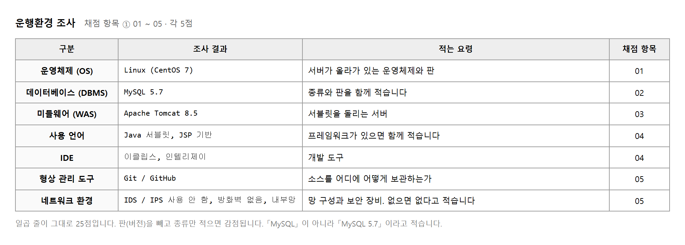
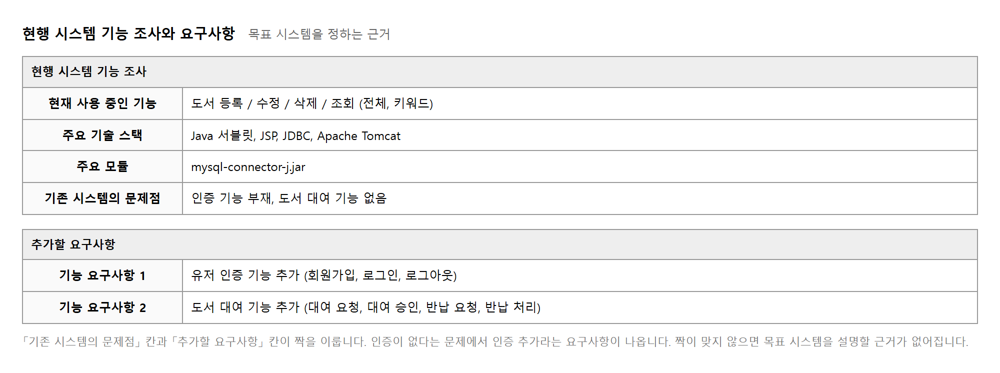
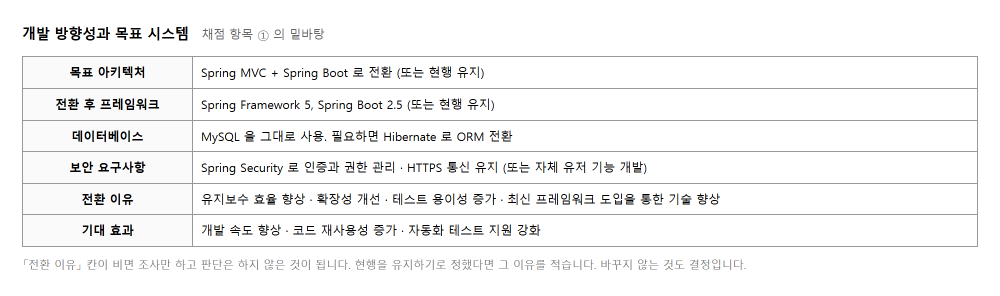
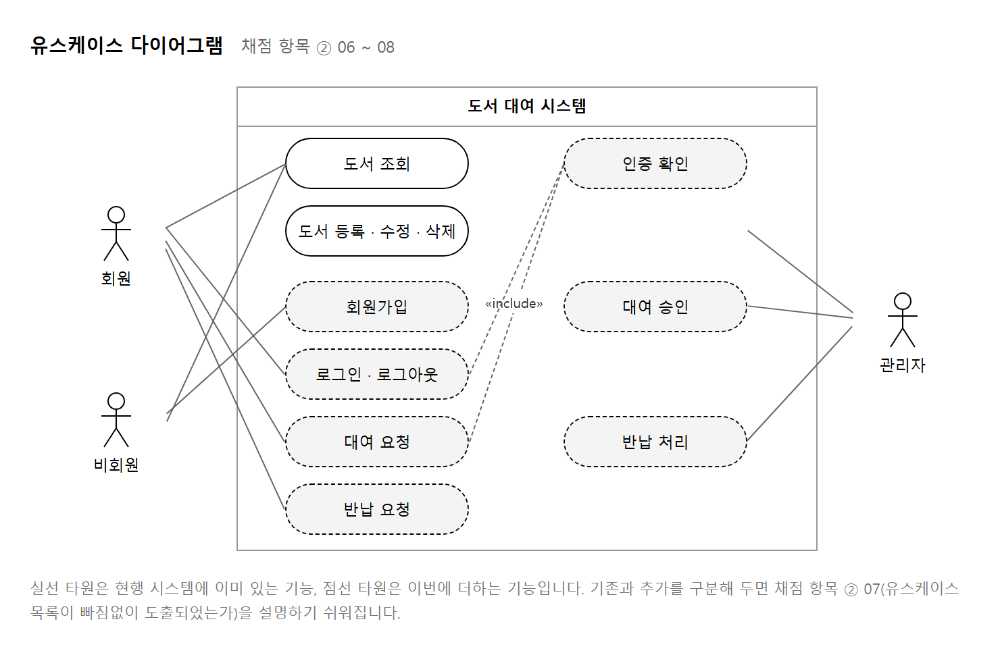
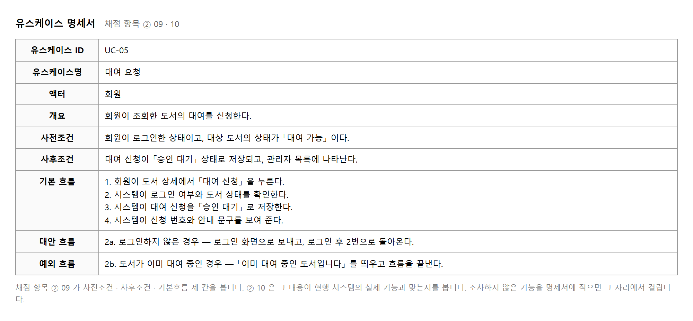
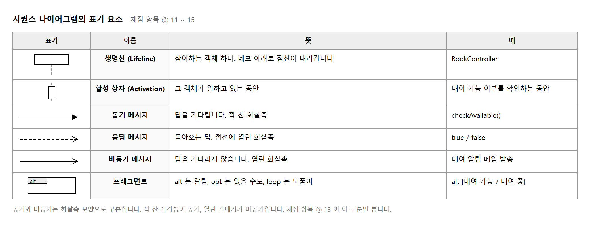
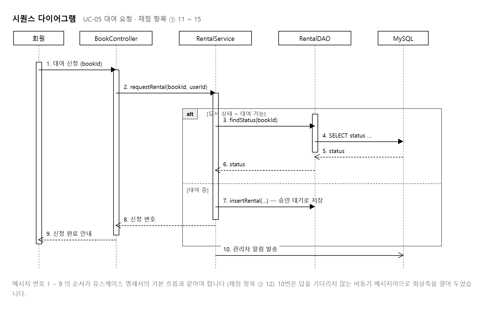
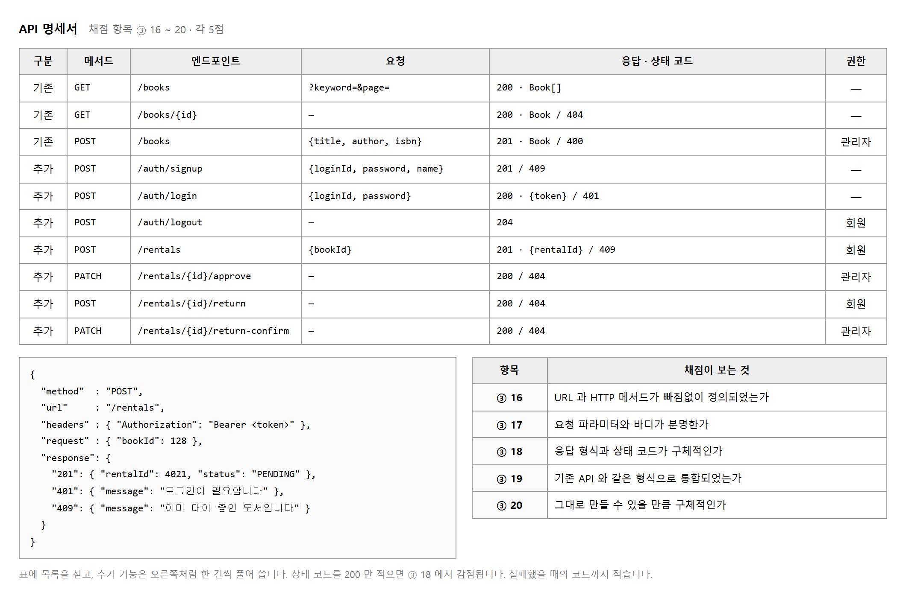
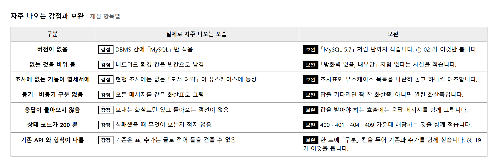

능력단위 요구사항 확인 (2001020201_23v5) / 5수준 · 평가방법 평가자 체크리스트 (100점)
이 교과의 제출물은 네 가지를 한 파일에 담은 PPT 한 벌입니다. 앞의 세 교과와 달리 새로 만드는 화면이 없습니다. 이미 만들어져 있는 시스템을 받아, 그것을 조사하고 무엇을 더할지 정리하는 일입니다.
| 과제 | 만들어야 할 것 | 확인하는 것 | 배점 |
|---|---|---|---|
| 1 | 현행 시스템 조사 | 운행환경 · 기능 · 문제점 · 목표 시스템 | 25 |
| 2 | 유스케이스 다이어그램과 명세서 | 액터 · 목록 · 표기법 · 명세서 · 현행과의 일치 | 25 |
| 3 | 시퀀스 다이어그램 | 객체 · 순서 · 동기와 비동기 · 프래그먼트 · 표기법 | 50 |
| 4 | API 명세서 | 엔드포인트 · 요청 · 응답 · 형식 통합 · 구체성 |
평가방법이 평가자 체크리스트 입니다. 채점 항목 20개를 하나씩 보며 있으면 5점, 없으면 0점으로 매깁니다. 부분 점수가 없습니다. 스무 칸을 모두 채우는 것이 이 교과의 목표입니다.
이 능력단위의 수행준거는 거의 모두 「업무 분석가가 …한 것을 확인할 수 있다」 로 끝납니다. 요구사항을 처음부터 만들어 내는 일이 아니라, 남이 정리해 온 것을 받아 그대로 만들 수 있는지 따져 보는 일입니다.
현행 시스템 분석이란 새로운 기능을 추가하기에 앞서, 이미 운영 중인 시스템이 어떤 환경 위에서 동작하고 있는지를 조사하여 문서로 정리하는 작업을 말합니다. 운영체제, 데이터베이스, 개발 언어, 망 구성 등이 조사 대상입니다.
이 작업이 필요한 이유는 분명합니다. 기존 시스템의 환경을 알지 못하면 어떤 기능을 추가할 수 있고 어떤 기능은 추가할 수 없는지 판단할 수 없기 때문입니다. 비유하자면 이사를 앞두고 지금 사는 집의 구조를 먼저 확인하는 것과 같습니다. 방의 개수와 전기 용량을 알아야 어떤 가구를 옮길 수 있는지 정할 수 있습니다.
운행환경 조사표는 일곱 개 항목으로 구성됩니다. 이 일곱 줄이 채점 항목 ① 01 ~ 05 에 대응하며 배점은 25점입니다. 각 항목의 의미와 확인 방법은 다음 표와 같습니다. 확인 방법은 Windows 환경을 기준으로 정리하였습니다.
| 조사 항목 | 의미 | 예 | 확인 방법 |
|---|---|---|---|
| 운영체제 OS |
컴퓨터의 자원을 관리하고 응용 프로그램의 실행 환경을 제공하는 소프트웨어 | Linux (CentOS 7) | ⊞ + R 을 누른 뒤 winver 입력 |
| 데이터베이스 DBMS |
데이터를 저장하고 검색·변경할 수 있도록 관리하는 소프트웨어 | MySQL 5.7 | 명령 프롬프트에서 mysql --version |
| 미들웨어 WAS |
웹 요청을 받아 서블릿 등 프로그램을 실행하고 결과를 반환하는 서버 | Apache Tomcat 8.5 | 브라우저에서 localhost:8080 접속 |
| 사용 언어 | 응용 프로그램을 작성한 언어. 프레임워크가 있으면 함께 적는다 | Java 서블릿, JSP 기반 | java -version |
| IDE | 소스 코드를 작성하고 실행·디버깅하는 개발 도구 | 이클립스, 인텔리제이 | 설치된 프로그램 목록에서 확인 |
| 형상 관리 도구 | 소스 코드의 변경 이력을 기록하고 이전 상태로 되돌릴 수 있게 하는 도구 | Git / GitHub | git --version |
| 네트워크 환경 | 망 구성과 보안 장비. 없으면 없다고 적는다 | 내부망, 방화벽 없음 | ipconfig |
별도로 설치할 프로그램은 없습니다. 실습에는 다음 환경을 사용합니다.
cmd 입력 → Enter
문서 작성Excel, 한셀, Google 스프레드시트 중 하나
화면 캡처⊞ + Shift + S
목적 — 현업에서 쓰는 방법으로 환경 정보를 수집하고, 조사표의 근거가 될 자료를 남깁니다. 조사표는 혼자 제출하지 않습니다. 어디서 나온 값인지 보여 주는 자료가 함께 가야 「확인했다」가 성립합니다.
준비물 — PC, 명령 프롬프트, PowerShell, 스프레드시트
절차 1. 시스템 요약 화면 캡처
⊞ + R 을 누르고 msinfo32 를 입력합니다.
「시스템 정보」 창이 열리면 왼쪽에서 시스템 요약을 선택합니다.
OS 이름, 버전, 프로세서, 설치된 물리 메모리가 한 화면에 나옵니다.
⊞ + Shift + S 로 이 화면을 캡처하여 근거_01_시스템요약.png 로 저장합니다.
절차 2. 전체 정보를 텍스트 파일로 저장
명령 프롬프트(⊞ + R → cmd)를 열고 다음을 입력합니다.
화면에 아무것도 나오지 않는 것이 정상입니다. 결과가 파일로 들어갔기 때문입니다.
절차 3. 소프트웨어별 버전 확인
설치 여부와 판(버전)을 하나씩 확인합니다. 버전 번호가 출력되면 설치된 상태입니다.
설치되지 않은 소프트웨어를 조회하면 다음과 같이 출력됩니다. 이 경우 조사표에는 「없음」이라고 적습니다. 빈칸으로 두지 않습니다.
절차 4. 네트워크 환경 확인
「IPv4 주소」와 「기본 게이트웨이」 두 줄을 기록합니다.
절차 5. 한 번에 모으기 (현업 방식)
항목이 일곱 개뿐이면 하나씩 쳐도 되지만, 서버가 여러 대이면 그럴 수 없습니다.
현업에서는 수집 스크립트를 한 번 만들어 두고 서버마다 돌립니다.
메모장을 열어 다음을 붙여 넣고 as-is.ps1 로 저장합니다.
저장할 때 인코딩을 「UTF-8(BOM)」 으로 지정합니다.
PowerShell 을 열고(⊞ + R → powershell) 저장한 파일을 실행합니다.
실행이 막히면 Set-ExecutionPolicy -Scope Process Bypass 를 먼저 입력합니다.
결과 확인 — 다음 세 가지가 만들어졌으면 수집이 끝난 것입니다. 이 셋이 조사표의 근거 자료입니다.
수집이 끝났으면 제출 서식으로 옮깁니다. 실제 평가에서 제공되는 도서 대여 시스템을 조사한 예는 다음과 같습니다. 일곱 줄이 모두 채워져야 하며, 각 줄이 채점 항목에 대응합니다.

수집한 값이 조사표의 어느 줄로 가는지는 다음과 같습니다. 이 대응을 알면 옮겨 적는 일은 기계적으로 끝납니다.
| 조사표 항목 | 어디서 얻나 | 옮겨 적을 때 |
|---|---|---|
| 운영체제 | msinfo32 의 「OS 이름」, 또는 수집결과 1행 |
판(버전)까지 함께. 서버면 배포판 이름까지 (예: CentOS 7) |
| 데이터베이스 | mysql --version 출력 |
제품명과 버전만 남기고 나머지는 버림 (예: MySQL 5.7) |
| 미들웨어 | Tomcat 설치 폴더의 RELEASE-NOTES 첫 줄 |
제품명과 버전 (예: Apache Tomcat 8.5) |
| 사용 언어 | java -version 출력 |
언어와 함께 프레임워크·기술도 적음 (예: Java 서블릿, JSP 기반) |
| IDE | 설정 → 앱 → 설치된 앱 목록 | 쓰는 것만. 여러 개면 쉼표로 (예: 이클립스, 인텔리제이) |
| 형상 관리 도구 | git --version, 원격 저장소 주소 |
도구와 보관 위치를 함께 (예: Git / GitHub) |
| 네트워크 환경 | ipconfig, 보안 장비 담당자 확인 |
망 구성과 보안 장비. 없으면 「없음」 (예: 내부망, 방화벽 없음) |
목적 — 수집한 값을 제출 서식에 맞추어 정리하고 산출물을 완성합니다.
준비물 — 실습 1-1 의 근거 자료 세 개, 스프레드시트
절차
근거_03_수집결과.txt 의 값을
「조사 결과」 열로 옮깁니다. 평가에서는 제공된 현행 시스템 파일의 값을 쓰고,
연습 단계에서는 자신의 PC 값을 그대로 씁니다.RELEASE-NOTES 파일을 열어 첫 줄을 보고,
IDE 는 설정 → 앱 → 설치된 앱 목록에서 확인합니다.근거_01_시스템요약.png 는 그림으로 넣고,
근거_02 · 근거_03 은 필요한 줄만 인용합니다.제출물 — 운행환경 조사표 1부 (일곱 줄, 판(버전) 포함) + 근거 자료
스스로 확인 — 일곱 줄이 모두 차 있고, 각 줄에 버전이 있으며, 조사 결과마다 어느 근거 자료에서 나온 값인지 말할 수 있으면 완성입니다.
네 산출물은 앞의 것이 뒤의 것의 재료가 됩니다. 조사표에서 유스케이스가 나오고, 유스케이스의 기본 흐름에서 시퀀스가 나오고, 시퀀스의 메시지에서 API 가 나옵니다. 순서를 건너뛰면 뒤에서 지어내게 됩니다.
다섯 단계로 나누었습니다. 예제는 평가도구의 작업지시서에 실린 것을 그대로 씁니다. 이미 있는 도서 관리 시스템(등록 · 수정 · 삭제 · 조회)에 유저 인증과 도서 대여 두 가지를 더하는 경우입니다.
실제 평가에서는 현행 시스템 파일이 제공됩니다. 그 파일을 열어 조사하는 것이 첫 단계이므로, 이 교안의 조사 결과와 숫자가 다를 수 있습니다. 절차는 같습니다.
평가자 체크리스트는 채점자가 항목을 하나씩 읽으며 있다 / 없다 를 표시하는 방식입니다. 「잘 썼다」 와 「대충 썼다」 를 나누지 않습니다. 있으면 5점이고 없으면 0점입니다.
그래서 이 교과에서 점수를 잃는 방식은 하나뿐입니다. 칸을 비우는 것입니다. 길게 쓸 필요가 없고, 대신 빠뜨리지 않아야 합니다.
| 쪽 | 내용 | 채점 항목 |
|---|---|---|
| 1 | 표지 | — |
| 2 | 운행환경 조사 | ① 01 ~ 05 |
| 3 | 현행 시스템 기능 조사 | ① 의 밑바탕 |
| 4 | 요구사항과 목표 시스템 | ① 의 밑바탕 |
| 5 | 요구사항 명세서 | ② 의 밑바탕 |
| 6 | 유스케이스 다이어그램 | ② 06 ~ 08 |
| 7 ~ 9 | 유스케이스 명세서 (추가 기능 수만큼) | ② 09 · 10 |
| 10 ~ 12 | 시퀀스 다이어그램 | ③ 11 ~ 15 |
| 13 ~ 14 | API 명세서 | ③ 16 ~ 20 |
제공된 프로젝트 파일을 열어 무엇 위에서 돌아가고 있는지를 찾습니다. 추측하지 않고 파일 안에서 근거를 찾습니다.
| 찾을 것 | 볼 자리 | 예 |
|---|---|---|
| DBMS 와 판 | 접속 문자열 · 드라이버 파일 이름 | mysql-connector-j.jar · jdbc:mysql://… |
| 미들웨어 | 서버 폴더 · 설정 파일 | apache-tomcat-8.5.x |
| 사용 언어 | 소스 확장자와 폴더 구조 | .java · .jsp · WEB-INF |
| 형상 관리 | 프로젝트 안의 숨은 폴더 | .git 폴더 · .gitignore |
| 망 구성 | 제공 자료의 안내 · 강사 확인 | 내부망 · 방화벽 없음 |
SELECT VERSION(); 을 실행해 확인합니다.
감점 네트워크 환경 칸을 빈칸으로 남김
권함 「IDS / IPS 사용 안 함, 방화벽 없음, 내부망」 — 없다는 것도 조사 결과입니다
소스를 열어 지금 무엇이 되는지 적습니다. 화면과 메뉴를 훑고, 컨트롤러나 서블릿의 이름을 보면 기능 목록이 나옵니다.

문제점은 없는 기능으로 적습니다. 「불편하다」 「느리다」 같은 느낌이 아니라 무엇이 없는지를 적어야 그것이 그대로 요구사항이 됩니다.
약함 보안이 취약함
권함 인증 기능 부재 — 누구나 도서를 등록 · 삭제할 수 있음
아래처럼 적으면 「유저 인증 기능 추가」 라는 요구사항이 그대로 따라 나옵니다. 문제점 하나에 요구사항 하나가 대응하게 만드는 것이 이 단계의 목표입니다.
현행을 조사했으면 앞으로 어떻게 할 것인지를 적습니다. 수행준거 1.3 이 「명확하고 구체적으로 기술할 수 있다」 로 되어 있습니다. 구체적이라는 말은 제품 이름과 판이 적혀 있다는 뜻입니다.

모든 칸을 「전환」 으로 채울 필요가 없습니다. 데이터베이스를 그대로 쓰기로 했다면 「MySQL 을 그대로 사용」 이라고 적고 그 이유를 「데이터 이관 비용이 크고 현행 구조로 요구사항을 모두 담을 수 있음」 처럼 적습니다.
바꾸는 쪽을 택했다면 왜 지금인지를 적습니다. 「최신이라서」 는 이유가 되지 않습니다. 「인증과 권한 관리를 직접 만들지 않고 쓰기 위해」 처럼 이번 요구사항과 이어야 설득이 됩니다.
「도서 대여 기능 추가」 는 한 줄이지만 그대로 만들 수는 없습니다. 요구사항 명세서는 그 덩어리를 하나씩 확인할 수 있는 크기로 쪼갠 표입니다.
| ID | 구분 | 요구사항 | 검증 기준 |
|---|---|---|---|
| SR-01 | 기능 | 회원은 아이디와 비밀번호로 가입할 수 있다 | 같은 아이디로 두 번 가입하면 거절된다 |
| SR-02 | 기능 | 회원은 로그인 · 로그아웃할 수 있다 | 로그아웃 후 대여 화면에 들어가면 로그인으로 보내진다 |
| SR-03 | 기능 | 회원은 대여 가능한 도서의 대여를 신청할 수 있다 | 이미 대여 중인 도서는 신청되지 않는다 |
| SR-04 | 기능 | 관리자는 대여 신청을 승인하거나 반려할 수 있다 | 승인하면 도서 상태가 「대여 중」 으로 바뀐다 |
| SR-05 | 비기능 | 비밀번호는 저장할 때 되돌릴 수 없게 만든다 | 데이터베이스에서 원문 비밀번호가 보이지 않는다 |
수행준거 2.2 가 「정의된 검증 기준과 절차에 따라서 요구사항을 확인할 수 있다」 입니다. 요구사항만 적고 검증 기준을 비우면 「확인했다」 고 말할 근거가 없어집니다. 무엇을 해 보면 되는지를 한 줄로 적습니다.
약함 대여 기능이 잘 동작한다
권함 이미 대여 중인 도서로 신청하면 「이미 대여 중인 도서입니다」 가 뜬다
이 표의 ID(SR-01 …)는 뒤의 유스케이스와 API 에서 그대로 인용합니다. 번호를 붙여 두면 어느 요구사항이 어디서 처리되는지 짚어 보일 수 있습니다.
채점 항목 ② 06 이 「기존 시스템의 액터가 올바르게 정의되었는가」 입니다. 지금 시스템에 인증이 없으므로 기존 액터는 사실상 하나뿐입니다. 인증을 더하면서 액터가 늘어납니다.
| 액터 | 구분 | 할 수 있는 일 |
|---|---|---|
| 비회원 | 추가 | 도서 조회 · 회원가입 |
| 회원 | 추가 | 도서 조회 · 로그인 · 대여 요청 · 반납 요청 |
| 관리자 | 추가 | 도서 등록 · 수정 · 삭제 · 대여 승인 · 반납 처리 |
인증이 없던 시절에는 구분 없는 사용자 하나가 모든 일을 했습니다. 그 사실을 적어 두면 「왜 인증을 더하는가」 가 저절로 설명됩니다.
채점 항목 ② 07 이 「기존 시스템의 유스케이스 목록이 빠짐없이 도출되었는가」 입니다. 빠짐없이 가 걸려 있으므로 기능 조사표의 기능이 모두 목록에 있어야 합니다.
| ID | 유스케이스 | 구분 | 대응 요구사항 |
|---|---|---|---|
| UC-01 | 도서 조회 | 기존 | — |
| UC-02 | 도서 등록 · 수정 · 삭제 | 기존 | — |
| UC-03 | 회원가입 | 추가 | SR-01 |
| UC-04 | 로그인 · 로그아웃 | 추가 | SR-02 |
| UC-05 | 대여 요청 | 추가 | SR-03 |
| UC-06 | 대여 승인 | 추가 | SR-04 |
| UC-07 | 반납 요청 · 반납 처리 | 추가 | SR-04 |
감점 조사표에 없는 「도서 예약」 이 유스케이스로 등장
권함 조사표와 요구사항 명세서에 있는 것만 옮겨 적습니다

«include» 로 이었습니다.채점 항목 ② 08 이 「표준 표기법에 맞게 작성되었는가」 하나만 봅니다. 아래 넷이 지켜지면 충족됩니다.
«include» 와 «extend» 는 점선 화살표이고 방향이 반대입니다.
include 는 부르는 쪽에서 불리는 쪽으로, extend 는 더하는 쪽에서 원래 쪽으로 향합니다.표기법에는 없는 것이지만, 실선과 점선으로 나누고 범례를 달아 두면 채점자가 ② 07(목록이 빠짐없이 도출되었는가)을 바로 확인할 수 있습니다. 그림 아래에 한 줄만 적으면 됩니다.
— 실선 타원 : 현행 시스템에 이미 있는 기능 - - 점선 타원 : 이번 요구사항으로 더하는 기능

두 칸을 헷갈리는 경우가 많습니다. 기준은 시점입니다.
기본 흐름은 번호를 붙인 문장으로 적습니다. 이 번호가 다음 단계에서 시퀀스 다이어그램의 메시지 번호가 됩니다. 번호가 없으면 시퀀스를 그릴 때 순서를 다시 정해야 하고, 그러면 둘이 어긋납니다.

채점 항목 ③ 11 이 「참여하는 객체가 올바르게 정의되었는가」 입니다. 무엇을 생명선으로 놓을지는 계층을 따라 정하면 됩니다.
| 자리 | 이 예제에서 | 고르는 기준 |
|---|---|---|
| 액터 | 회원 | 사람 또는 바깥 시스템 |
| 화면 · 컨트롤러 | BookController | 요청을 받는 자리 |
| 업무 처리 | RentalService | 판단과 규칙이 들어 있는 자리 |
| 데이터 접근 | RentalDAO | 질의를 만드는 자리 |
| 저장소 | MySQL | 데이터베이스 |
다섯 개가 보통입니다. 세 개 아래로 줄이면 흐름이 뭉뚱그려지고, 여덟 개를 넘으면 한 쪽에 들어가지 않습니다.
약함 「회원 → 시스템 → DB」 세 개만 놓음
권함 컨트롤러 · 서비스 · DAO 를 나누어 놓습니다. 계층이 드러납니다

채점 항목 ③ 13 이 「동기 / 비동기 메시지가 적절히 구분되어 표현되었는가」 입니다. 구분 기준은 하나입니다. 보낸 쪽이 답을 기다리는가.
| 종류 | 화살촉 | 언제 쓰는가 | 이 예제에서 |
|---|---|---|---|
| 동기 | 꽉 찬 삼각형 | 답을 받아야 다음으로 갈 수 있을 때 | 도서 상태 조회 · 대여 저장 |
| 비동기 | 열린 갈매기 | 보내 놓고 바로 다음으로 갈 때 | 관리자 알림 발송 |
| 응답 | 점선 + 열린 갈매기 | 동기 호출의 답 | 조회 결과 · 신청 번호 |
대부분의 메시지는 동기입니다. 비동기는 알림 · 메일 · 로그 처럼 결과를 기다릴 필요가 없는 것에만 씁니다. 비동기가 하나도 없으면 ③ 13 에서 구분했다고 보기 어려우므로, 알림 같은 것을 한 건 넣어 두는 편이 낫습니다.
채점 항목 ③ 14 는 「필요한 경우 사용되었는가」 입니다. 무조건 넣으라는 것이 아니라, 갈리거나 되풀이되는 곳이 있으면 표시하라는 뜻입니다.
| 종류 | 뜻 | 이 예제에서 쓸 자리 |
|---|---|---|
| alt | 조건에 따라 갈림 | 도서가 대여 가능일 때 / 대여 중일 때 |
| opt | 조건이 맞으면 실행, 아니면 건너뜀 | 연체료가 있을 때만 계산 |
| loop | 되풀이 | 목록의 도서마다 상태를 확인 |
유스케이스 명세서의 대안 흐름과 예외 흐름이 그대로 alt 의 갈래가 됩니다.
명세서를 제대로 썼다면 어디에 무엇을 넣을지 고민할 필요가 없습니다.
감점 예외 흐름이 명세서에 있는데 시퀀스에는 갈래가 없음
권함 명세서의 대안 · 예외를 alt 의 두 번째 칸으로 옮깁니다
시퀀스에서 액터가 컨트롤러로 보내는 화살표가 API 한 건이 됩니다.
대여 요청 시퀀스의 1번 메시지가 POST /rentals 입니다.
유스케이스 하나에 API 한둘이 나옵니다.

규칙을 하나 정해 두고 끝까지 지킵니다. 가장 무난한 것은 자원을 명사 복수로 쓰는 방식입니다.
| 하는 일 | 메서드 | URL | 비고 |
|---|---|---|---|
| 목록 조회 | GET | /books | 검색은 질의 문자열로 |
| 한 건 조회 | GET | /books/{id} | — |
| 만들기 | POST | /books | — |
| 일부 고치기 | PATCH | /rentals/{id}/approve |
상태를 바꾸는 동작 |
| 지우기 | DELETE | /books/{id} | — |
약함 /getBookList · /doRental — 동사를 URL 에 넣음
권함 GET /books · POST /rentals — 동작은 메서드가 나타냅니다
목록 표만으로는 ③ 17 · 18 을 충족하기 어렵습니다. 추가 기능은 한 건씩 아래 서식으로 풀어 씁니다.
POST /rentals 대여 신청
헤더 Authorization: Bearer <token>
요청 { "bookId": 128 }
응답
201 { "rentalId": 4021, "status": "PENDING" }
401 { "message": "로그인이 필요합니다" }
409 { "message": "이미 대여 중인 도서입니다" }
채점 항목 ③ 18 이 「응답 형식 및 상태 코드가 구체적으로 명시되었는가」 입니다. 성공만 적으면 구체적이라고 보기 어렵습니다. 실패했을 때 무엇이 오는지까지 적습니다.
| 코드 | 뜻 | 이 예제에서 쓸 자리 |
|---|---|---|
| 200 | 잘 됐다 | 조회 · 승인 |
| 201 | 새로 만들었다 | 회원가입 · 대여 신청 · 도서 등록 |
| 204 | 됐는데 돌려줄 내용이 없다 | 로그아웃 |
| 400 | 보낸 값이 잘못됐다 | 필수 항목 누락 |
| 401 | 로그인하지 않았다 | 대여 신청 · 반납 요청 |
| 403 | 로그인했지만 권한이 없다 | 회원이 대여 승인을 시도 |
| 404 | 그런 것이 없다 | 없는 도서 번호 |
| 409 | 지금 상태와 부딪친다 | 중복 아이디 · 이미 대여 중 |
여덟 개를 다 쓸 필요는 없습니다. API 한 건에 성공 하나 + 실패 하나나 둘이면 됩니다. 요구사항 명세서의 검증 기준에 적어 둔 거절 상황이 곧 실패 코드가 됩니다.
감점 응답: 성공 시 200
권함 201 · 401 · 409 를 각각 어떤 경우인지와 함께 적습니다
채점 항목 ③ 19 가 「기존 시스템 API 와 일관된 형식으로 통합 작성되었는가」 입니다. 기존 기능을 표로, 추가 기능을 글로 적으면 둘을 견줄 수 없어 여기서 걸립니다.
현행 시스템이 서블릿 기반이라 엄밀한 의미의 API 가 없을 수도 있습니다. 그럴 때는 지금 요청을 받는 주소를 그대로 적고, 목표 시스템으로 바꾸었을 때의 주소를 나란히 둡니다.
| 구분 | 현행 | 목표 | 비고 |
|---|---|---|---|
| 기존 | /book/list.do | GET /books |
질의 문자열로 검색어를 받음 |
| 기존 | /book/insert.do | POST /books |
관리자만 |
| 추가 | — | POST /rentals |
회원만 · 401 · 409 처리 |
현행을 그대로 두기로 했다면 목표 칸에 현행과 같은 주소를 적고 비고에 「현행 유지」 라고 적습니다. 칸을 비우지 않습니다.
채점 항목 ③ 20 이 「실제 구현 가능한 수준으로 구체적이고 정확하게」 입니다. 기준은 하나로 잡으면 됩니다.
평가자 체크리스트는 부분 점수가 없습니다. 항목마다 근거가 되는 쪽 번호를 적어 보고, 적을 수 없는 항목을 찾습니다.
| 번호 | 확인할 것 | 근거 쪽 |
|---|---|---|
| 01 | 운영체제(OS)가 정확하게 조사되어 기재되었는가 | |
| 02 | DBMS 종류와 버전이 구체적으로 명시되었는가 | |
| 03 | 미들웨어(WAS) 종류와 버전이 정확하게 기재되었는가 | |
| 04 | 사용 언어 및 개발 프레임워크가 올바르게 조사되었는가 | |
| 05 | 형상관리 도구 및 네트워크 환경이 빠짐없이 조사되었는가 | |
| 06 | 기존 시스템의 액터가 올바르게 정의되었는가 | |
| 07 | 기존 시스템의 유스케이스 목록이 빠짐없이 도출되었는가 | |
| 08 | 유스케이스 다이어그램이 표준 표기법에 맞게 작성되었는가 | |
| 09 | 명세서에 사전조건 · 사후조건 · 기본흐름이 작성되었는가 | |
| 10 | 명세서 내용이 현행 시스템의 실제 기능과 일치하는가 | |
| 11 | 시퀀스에 참여하는 객체가 올바르게 정의되었는가 | |
| 12 | 메시지 흐름의 순서가 유스케이스 기본 흐름과 일치하는가 | |
| 13 | 동기 / 비동기 메시지가 적절히 구분되어 표현되었는가 | |
| 14 | alt · opt · loop 가 필요한 경우 사용되었는가 | |
| 15 | 시퀀스 다이어그램이 UML 표준 표기법에 맞는가 | |
| 16 | 추가 기능의 엔드포인트가 빠짐없이 정의되었는가 | |
| 17 | 각 API 의 요청 파라미터 및 바디가 명확한가 | |
| 18 | 각 API 의 응답 형식 및 상태 코드가 구체적인가 | |
| 19 | 기존 API 와 일관된 형식으로 통합 작성되었는가 | |
| 20 | 실제 구현 가능한 수준으로 구체적이고 정확한가 |
작업지시서의 제출 방법은 「각 항목을 PPT 로 정리하여 한 파일로 제출」 입니다.
아래 일곱 가지가 되풀이되는 감점입니다. 모두 몰라서가 아니라 한 칸을 덜 적어서 생깁니다. 평가자 체크리스트는 있으면 5점, 없으면 0점입니다.
